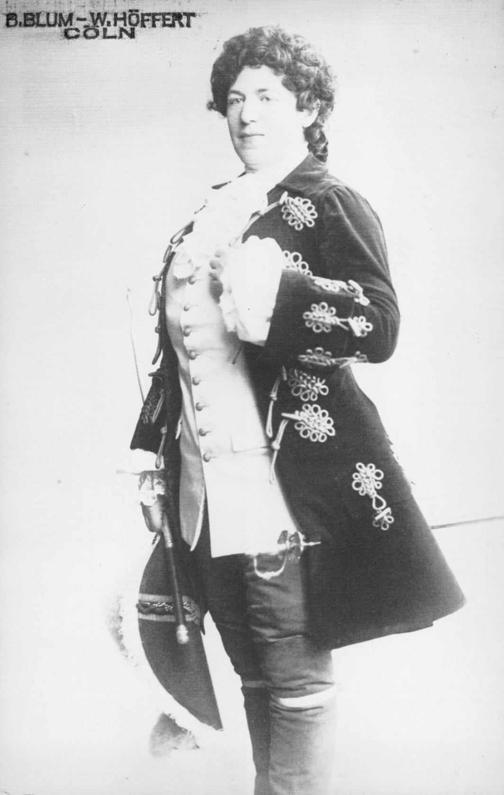

Glossar
Binäres Geschlechtersystem
Binarität bezeichnet im Bezug auf Geschlecht die Einteilung in zwei Kategorien: männlich und weiblich. Diese Einordnung wird anhand körperlicher Merkmale vorgenommen und wird gesellschaftlich häufig als Norm verstanden. Dabei wird vollständig ausgeblendet, dass geschlechtliche Vielfalt existiert, die über diese Zweiteilung hinausgeht. Eine binäre Aufteilung bildet die Vielfalt geschlechtlicher Realitäten daher nur unzureichend ab und ist historisch sowie kulturell nicht universell.
Crossdressing
Crossdressing bezeichnet das Tragen von Kleidung, die stereotypisch einem anderen Geschlecht als dem eigenen zugeschrieben wird. Dabei geht es in erster Linie um Ausdruck, Darstellung oder Performance von Geschlecht und nicht zwingend um die Geschlechtsidentität einer Person.
Gendernonkonformität
Gendernonkonformität beschreibt äußere Ausdrucksformen, die nicht den gesellschaftlichen Geschlechternormen entsprechen. Ein nonkonformer Geschlechtsausdruck kann mit den anderen Dimensionen von Geschlecht verknüpft, aber auch total unabhängig davon sein.
Heteronormativität
Heteronormativität bezeichnet die gesellschaftliche Annahme, dass Heterosexualität sowie eine eindeutige, binäre Geschlechterordnung die Norm sind. Diese Vorstellung prägt gesellschaftliche Strukturen, Erwartungen und Darstellungen und führt dazu, dass andere Geschlechtsidentitäten und sexuelle Orientierungen oft unsichtbar gemacht oder als Abweichung verstanden werden.
Hosenrolle
Eine Hosenrolle bezeichnet eine Theater- oder Opernrolle, in der eine weiblich besetzte Figur eine männliche Figur spielt und entsprechend kostümiert auftritt. Der Begriff stammt aus der Theatertradition, in der Geschlecht auf der Bühne häufig über Kostüm und Darstellung markiert wird.
Historisch wurden Hosenrollen oft genutzt, um stimmliche oder dramatische Anforderungen zu erfüllen, aber auch um mit Geschlechterdarstellungen zu spielen und deren Konstruiertheit sichtbar zu machen.
Alice Guszalewicz & Oscar Wilde
Zwei Welten
Die Fehlzuschreibung durch Richard Ellmann zeigt, wie stark geschlechtliche Zuschreibungen von stereotypen Vorstellungen geprägt sind. Während in der Deutung biografische Realität und gesellschaftliche Projektion verschwimmen, verweist die Verwechslung mit Alice Guszalewicz auf die Bühne als akzeptierten Raum für das Spiel mit Identitäten.
Bühne

Alice Guszalewicz als Oktavian
Quelle: Stadt- und Univ.-Bibliothek, Frankfurt am Main
In Richard Strauss’ Oper Der Rosenkavalier verkörperte Alice Guszalewicz als Octavian einen jungen Mann, der sich im Laufe der Handlung wiederum als Frau verkleidet. Diese doppelte Brechung bot dem Publikum einen subversiven Blick auf die Wandelbarkeit von Identität. In einer Zeit, in der die Mode im Alltag strengen geschlechtsspezifischen Regeln unterlag, bot die Bühne den Raum, diese Grenzen zu sprengen.
Realität
Zur selben Zeit lieferten Kölsche Zeitungen Oscar Wilde der Lächerlichkeit aus. Während Crossdressing auf der Bühne Applaus erhielt, drohten im Alltag strafrechtliche Konsequenzen: Jeder Mann, der gesellschaftliche Normen überschritt, riskierte eine Verfolgung nach § 175.
Die Presse spielte dabei eine zentrale Rolle. Skandale prägten nicht nur die Berichterstattung, sondern auch die Alltagssprache. So etablierte sich nach 1895 die abschätzige Bezeichnung „Oscar“, während andere Skandale ähnliche sprachliche Stigmatisierungen hervorbrachten.
Weiterführende Links
Claire Waldoff
Waldoffs Chansons waren mehr als Unterhaltung; sie setzten sich kritisch mit zeitgenössischen Geschlechternormen auseinander. Ein Beispiel für ihren humorvollen Umgang mit gesellschaftlichen Konventionen und zwischenmenschlichen Dynamiken ist das Lied „Warum soll er nich mit ihr“ (1924). Darin zeigt sich Waldoffs Gespür für den Zeitgeist des Berlins der 1920er Jahre sowie ihre spielerische Auseinandersetzung mit gängigen Rollenbildern.
Claire Waldoff - Warum soll er nicht mit ihr (aus der Revue „An alle")
Quelle hier
dritte Strophe & Refrain
Jedes Mädchen braucht doch schließlich wat für's Herz
Ohne Scherz!
Und die Mütter denken immer ville schlimmer
Habn keen' Schimmer
Wie sie selber früher warn
Werden wir ja nie erfahrn
Nonnen waren sie jewiß nich
Nee, det is nich!
Hätten sie keen Mann jefunden
Wär die Welt schon längst verschwunden
Und die Liebe, ach herrje
Wär passé
Warum soll er nich mit ihr vor de Türe stehn?
Warum soll er nich mit ihr mal konditern jehn?
Warum soll er nich mit ihr, wehn die Frühlingslüfte zart
Machen mal uff de Spree eene Mondscheinfahrt?
Warum soll er nich mit ihr mal nen Witz riskiern?
Warum soll er nich mit ihr mal de Liebe spürn?
Warum soll er nich mit ihr, ja, warum soll er nich mit ihr?
Na, die Mutter, die war früher ooch mal sehr dafür!
Fanart
Links zu den Künstler*innen
Kuratiert und verfasst von Lilli Fischer in Zusammenarbeit mit Mia